1. Pierwsze kroki
Przy pierwszym uruchomieniu aplikacja pokazuje kilka dymków: wskazuje miejsce na ekranie i mówi, do czego służy. Dalej (albo strzałka w prawo) przechodzi do następnego, Pomiń (albo Esc) kończy. Na telefonie przycisk „Wstecz” działa jak „Pomiń”. W pustym zeszycie pojawia się też przykładowa pozycja - wykreśl ją, gdy dopiszesz własne.
Dymki można włączyć jeszcze raz: zębatka → Pokaż pierwsze kroki (na dole okna ustawień).
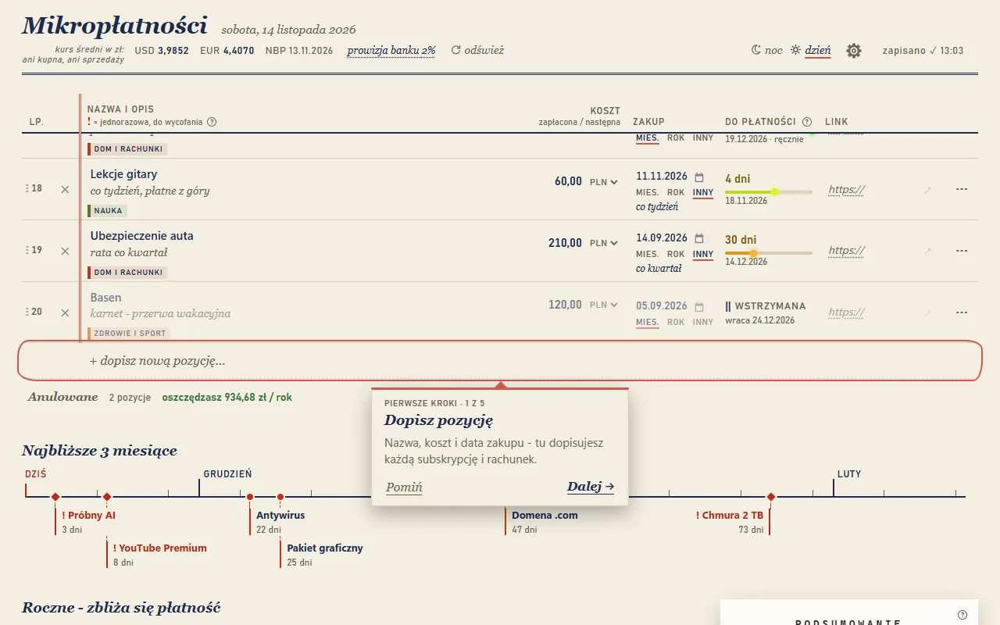
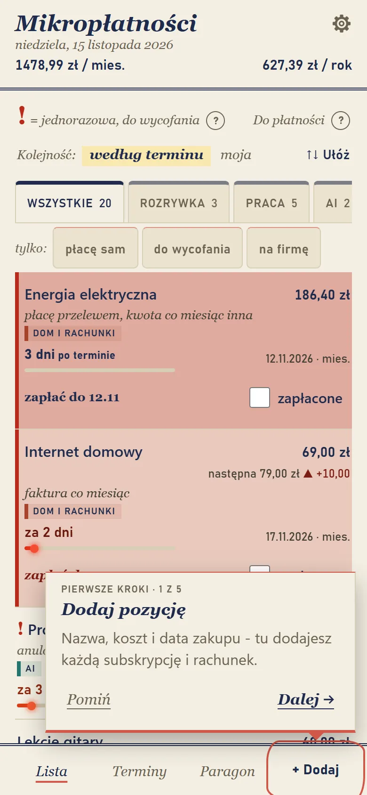
2. Ekran główny (komputer)
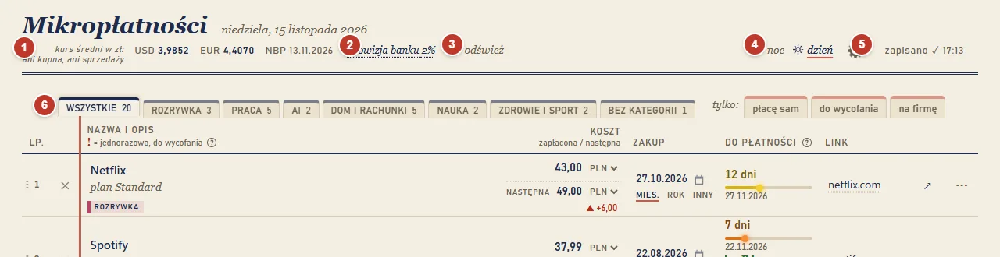
- Kursy NBP - kurs średni dolara, euro i innych walut z Twoich pozycji, z datą tabeli. Pobierane same; bez internetu zostaje ostatni zapamiętany kurs.
- Prowizja banku - ile Twój bank dolicza do kursu przy płatności kartą w obcej walucie (zwykle 2-4%). Zmienia wszystkie „≈ zł” i sumy.
- Odśwież - pobiera kursy od nowa.
- Noc / dzień - ciemne albo jasne tło.
- Zębatka - ustawienia aplikacji (rozdział 11). Obok stan zapisu: „zapisano ✓” z godziną - każda zmiana zapisuje się sama.
- Zakładki kategorii - pokazują tylko pozycje z jednej kategorii (z liczbą pozycji). Po prawej „tylko:” - płacę sam, do wycofania, na firmę. „Wszystkie” pokazuje znowu cały zeszyt.
3. Wiersz zeszytu
Każda subskrypcja albo rachunek to jeden wiersz. Wszystko wpisujesz wprost w wierszu - kliknij pole i zmień.
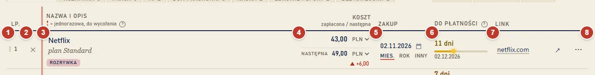
- Lp. - przeciągnij numer, żeby przesunąć wiersz wyżej albo niżej.
- × - wykreśla pozycję (rozdział 7).
- Nazwa i opis - pod spodem kategoria i znak „na firmę”. Czerwony ! przed nazwą znaczy: tej pozycji nie przedłużasz - anuluj ją przed odnowieniem.
- Koszt - zapłacona cena i waluta. Pod nią może być cena następna (koniec promocji, zapowiedziana podwyżka) z różnicą „▲ +6,00”. W dniu płatności cena następna sama staje się zapłaconą. Kwoty w obcej walucie mają obok „≈ zł”.
- Zakup - data zakupu i okres: mies., rok albo inny (tydzień, kwartał, 2 lata…).
- Do płatności - lont: liczba dni do terminu i pasek, który się skraca - od zielonego przez żółty do czerwonego. Pod nim dzień płatności.
- Link - strona usługi (np. do anulowania). Strzałka obok otwiera ją w przeglądarce. Link, który nie wygląda na zwykłą stronę (np. wklejony z błędem), nie otworzy się.
- ⋯ - pozostałe ustawienia pozycji (rozdział 5).
4. Dopisywanie pozycji
Kliknij „+ dopisz nową pozycję…” pod tabelą. Pojawi się pusty, podświetlony wiersz:
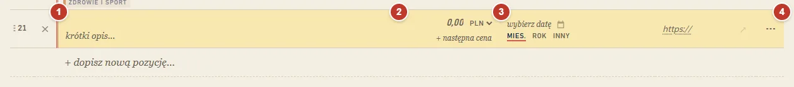
- Nazwa i krótki opis - np. „Netflix”, „plan Standard”.
- Koszt i waluta - kwota z jednej płatności. „+ następna cena”, gdy wiesz, że od kolejnej płatności będzie inna.
- Data zakupu i okres - od nich liczy się termin następnej płatności. Kalendarzyk obok daty otwiera wybór dnia.
- ⋯ - czy płatność pobiera się sama, czy płacisz sam, i czy ją przedłużać.
Każde pole jest nieobowiązkowe - pozycję bez daty też można zapisać, wtedy nie ma lontu. Kwotę, której nie da się odczytać (np. „20,5,1”), aplikacja zaznacza na czerwono, a po wyjściu z pola pokazuje ostatnią zapisaną.
5. Ustawienia pozycji „⋯”
„⋯” na końcu wiersza otwiera karteczkę z ustawieniami tej pozycji. Rzadziej zmieniane grupy są zwinięte - kliknij nazwę, żeby rozwinąć.
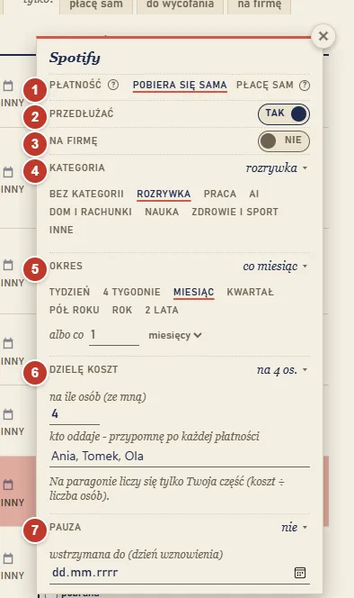
- Płatność - pobiera się sama (karta, subskrypcja) albo płacę sam (przelew, rachunek - rozdział 6).
- Przedłużać - „nie” dla okresów próbnych i usług do anulowania: pozycja dostaje !, trafia do listy „Do wycofania” i do powiadomień, a na paragonie jest poza sumą.
- Na firmę - przy terminie przypomnienie „pobierz fakturę”, na paragonie osobna suma firmowa.
- Kategoria - rozrywka, praca, AI, dom i rachunki, nauka, zdrowie i sport, inne. Od niej zależą zakładki nad tabelą i sumy na paragonie.
- Okres - tydzień, 4 tygodnie, miesiąc, kwartał, pół roku, rok, 2 lata albo dowolne „co N tygodni / miesięcy”.
- Dzielę koszt - na ile osób (Ty też) i kto oddaje. W sumach liczy się tylko Twoja część, a przy terminie przypomnienie „odbierz po … zł” z imionami i polem „oddane”.
- Pauza - „wstrzymana do” (dzień wznowienia): bez alarmów i poza sumami do tego dnia. Historia zapłaconych okresów zostaje.
6. Płatność ręczna
Przy pozycjach „płacę sam” (np. prąd, internet, czynsz) aplikacja pilnuje, żebyś zapłacił na czas. Tydzień przed terminem wiersz dostaje czerwony margines.
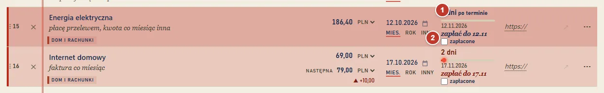
- Lont - dni do terminu, a po nim „po terminie”.
- Zapłać do i pole ☐ zapłacone. Gdy termin wypada w sobotę, niedzielę albo święto, „zapłać do” cofa się na ostatni dzień roboczy. Po zaznaczeniu „zapłacone” termin przechodzi na następny okres, a wpłata trafia do historii. Przy „kwota za każdym razem inna” aplikacja pyta, ile zapłaciłeś.
7. Wykreślanie i „Anulowane”
„×” przy wierszu pyta, czy wykreślić pozycję. Wykreślona trafia do „Anulowanych” pod tabelą - stamtąd można ją przywrócić albo usunąć na zawsze.
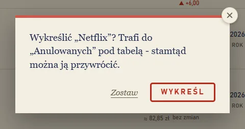
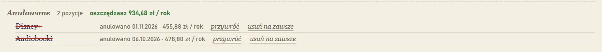
Przy „Anulowanych” widać, ile oszczędzasz w skali roku dzięki temu, że z nich zrezygnowałeś.
8. Najbliższe terminy
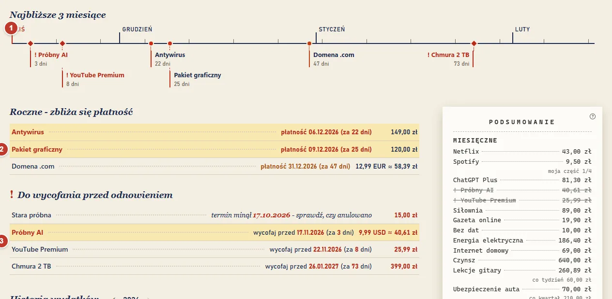
- Najbliższe 3 miesiące - miarka z płatnościami rozłożonymi na osi czasu. Romby to pozycje do wycofania.
- Roczne - zbliża się płatność - roczne opłaty w ciągu 3 miesięcy, żeby duża kwota nie zaskoczyła.
- Do wycofania przed odnowieniem - pozycje „Przedłużać: nie” z dniem, do którego trzeba je anulować. Gdy termin minął, aplikacja prosi o sprawdzenie, czy anulowanie się udało.
9. Paragon
Paragon liczy wszystko w złotych - waluty po kursie NBP z prowizją banku. Pozycje do wycofania (!) i wstrzymane (‖) są na liście, ale poza sumą.
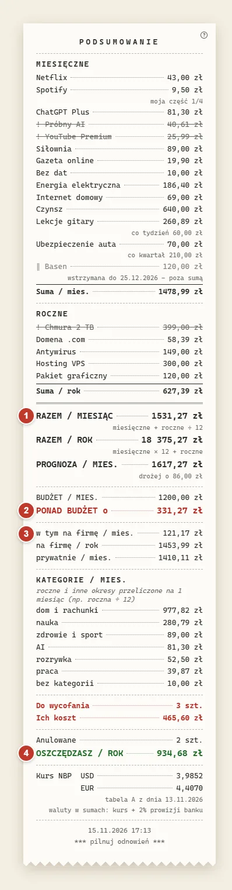
- Razem / miesiąc (miesięczne + roczne ÷ 12), razem / rok i prognoza - ile wyjdzie po wejściu cen następnych.
- Budżet - własny limit na miesiąc (ustawienia → Zeszyt). Gdy suma albo prognoza go przekracza - „ponad budżet o …”.
- Na firmę - osobno koszty firmowe i prywatne.
- Oszczędzasz / rok - suma z „Anulowanych”. Niżej kategorie na miesiąc i użyte kursy NBP.
10. Historia wydatków
Pod paragonem: ile wydałeś w każdym miesiącu roku (strzałki zmieniają rok), średnia na miesiąc, „Na co najwięcej” i zmiany cen - np. podwyżka Netflixa z datą i procentem. Historia zostaje także po pauzie albo zmianie na „nie przedłużaj” - zmienia się tylko przyszłość.
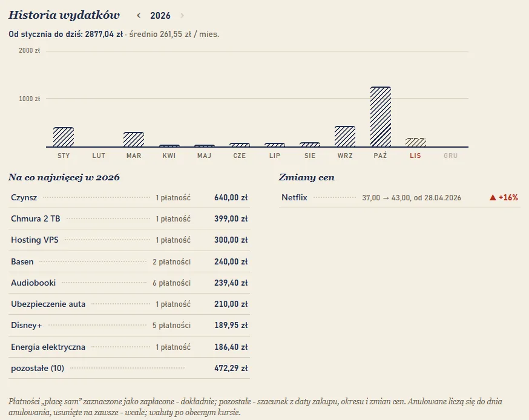
11. Ustawienia aplikacji
Zębatka u góry otwiera okno z czterema zakładkami. Na dole okna: język (polski / angielski), „o aplikacji” z licencjami i „Pokaż pierwsze kroki”.
Zeszyt
Co widać w zeszycie. Każdą funkcję można wyłączyć - znika z ekranu, a to, co wpisane, zostaje w pliku i wraca po włączeniu. Tu też waluty do wyboru przy kwocie, budżet miesięczny i „Krzywe elementy” (pieczątki, paragon i numery w kółkach lekko przekrzywione, domyślnie wyłączone).
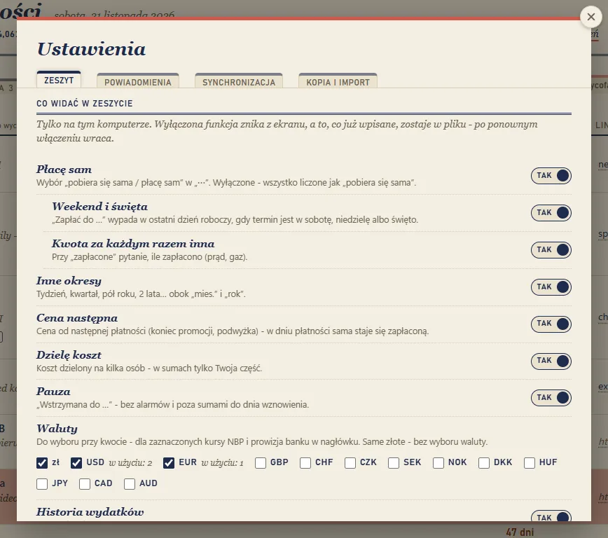
Powiadomienia
Wycofaj (przed odnowieniem pozycji „nie przedłużaj”), Zapłać (przed terminem płatności ręcznej), Przygotuj pieniądze (tydzień przed większą płatnością, próg w złotych) i Podwyżka. Na komputerze także „przy zamkniętej aplikacji” - raz dziennie przez Harmonogram zadań Windows. Na telefonie powiadomienia przychodzą także przy zamkniętej aplikacji.
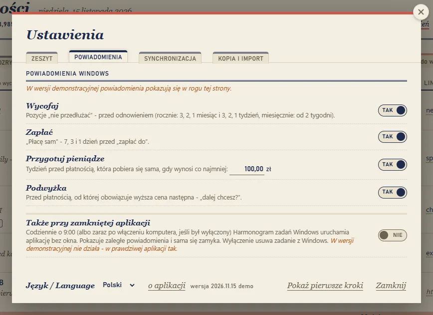
Synchronizacja
Gdzie są dane: Zapisuj lokalnie (plik na komputerze z 5 kopiami zapasowymi) i Synchronizuj z Google Dyskiem - rozdział 14. „Usuń z komputera” kasuje dane z tego urządzenia.
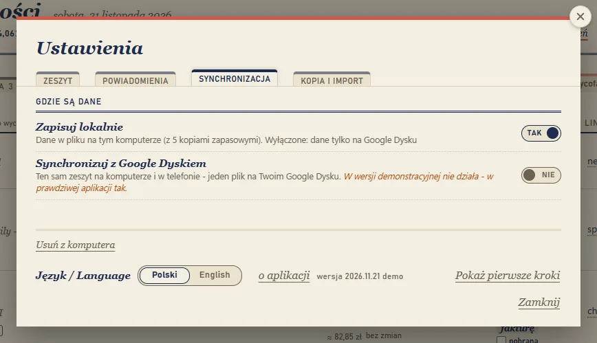
Kopia i import
Zapisz kopię jako… (cały zeszyt w jednym pliku, np. na pendrive), Wczytaj kopię… (obecne dane najpierw trafiają do kopii zapasowej), Eksport do Excela (CSV) i Import z wyciągu bankowego (rozdział 12).
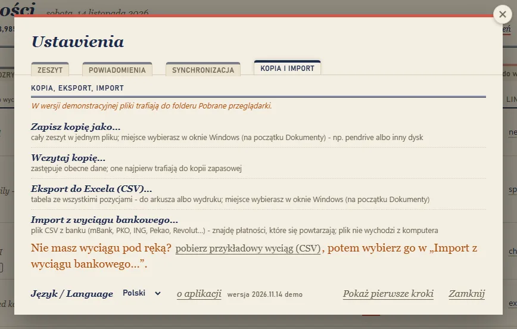
12. Import z wyciągu bankowego
Ustawienia → Kopia i import → Import z wyciągu bankowego… i wybierz plik CSV z historii operacji w bankowości internetowej (mBank, PKO, ING, Pekao, Revolut i inne). Aplikacja znajduje płatności, które powtarzają się co miesiąc u tego samego odbiorcy. Zaznacz, które dopisać - data ostatniej płatności staje się datą zakupu. Plik jest liczony tylko na tym urządzeniu, nigdzie nie wychodzi.
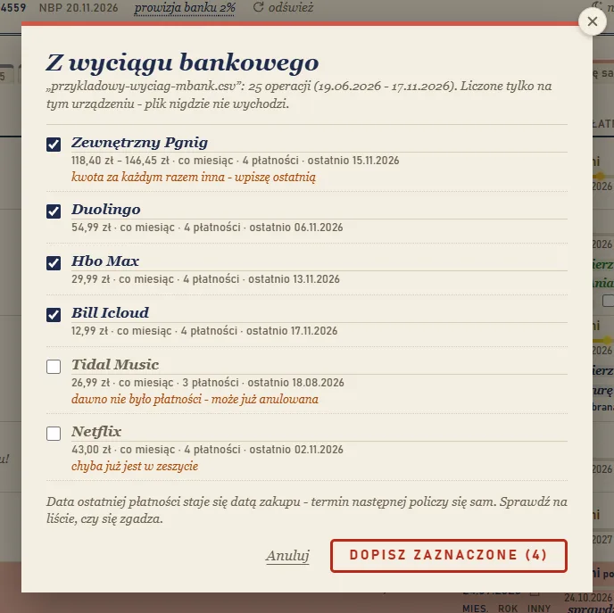
Uwagi pod pozycjami podpowiadają: „chyba już jest w zeszycie”, „dawno nie było płatności - może już anulowana”, „kwota za każdym razem inna”.
13. Telefon
Na telefonie zamiast szerokiej tabeli są karty i zakładki na dole ekranu. Obliczenia są te same co na komputerze.
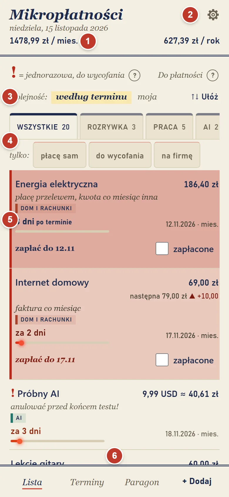
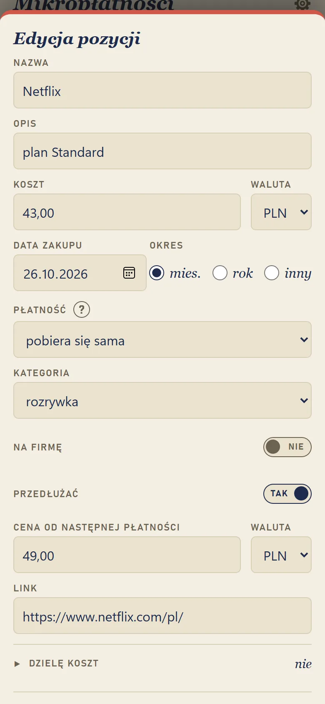
- Koszt na miesiąc i na rok - jak „razem” na paragonie.
- Zębatka - ustawienia, te same zakładki co na komputerze.
- Kolejność - według terminu albo własna. ↑↓ Ułóż przesuwa pozycje strzałkami; przy synchronizacji ta sama kolejność jest na komputerze.
- Filtr - kategorie i „tylko: płacę sam / do wycofania / na firmę”.
- Karta pozycji - nazwa, koszt, lont i termin, przy płatności ręcznej „zapłać do” i „zapłacone”. Dotknięcie otwiera edycję od dołu ekranu: wszystkie pola z wiersza i z „⋯” w jednym miejscu, na dole „Zapisz” albo „Anuluj”.
- Zakładki - Lista, Terminy, Paragon i „+ Dodaj”.
Przycisk „Wstecz” Androida cofa ostatni ruch: zamyka dymek, okno albo edycję, kończy „Ułóż”, wraca do listy - dopiero potem chowa aplikację.
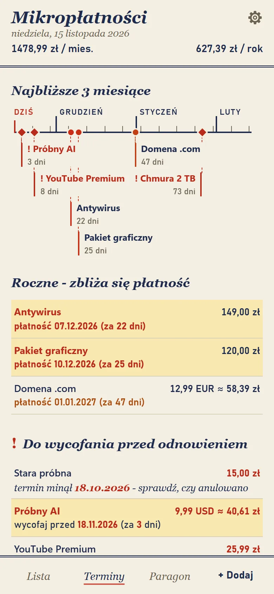
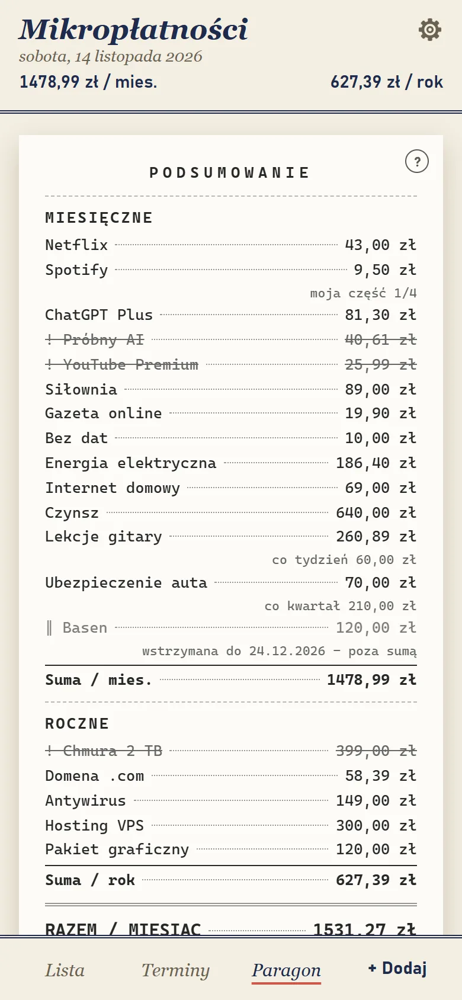
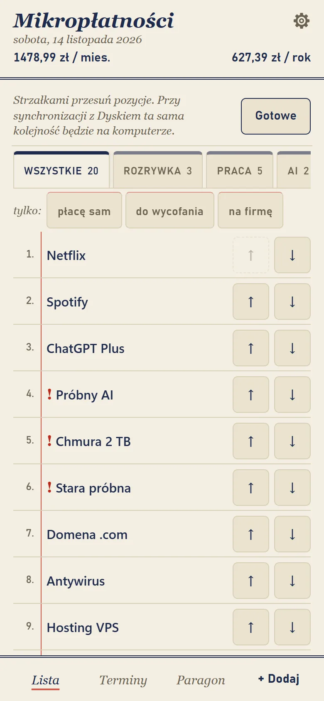
14. Gdzie są dane i Google Dysk
- Na urządzeniu - plik danych na komputerze albo w telefonie, zapisywany przez plik tymczasowy (zanik prądu nie zostawia uciętego pliku), z 5 kopiami zapasowymi. Gdy pliku nie da się odczytać, aplikacja niczego nie nadpisuje i podpowiada, jak wczytać kopię.
- Google Dysk - włącz „Synchronizuj z Google Dyskiem”, otwórz google.com/device i wpisz kod pokazany w aplikacji. Na Twoim Dysku powstaje jeden plik „mikroplatnosci.json” - aplikacja widzi tylko pliki, które sama utworzyła, nie Twoje dokumenty ani zdjęcia. Zmiany z telefonu i komputera są łączone pozycja po pozycji.
- Wspólne dane dla kilku osób (np. domownicy) - każda osoba włącza synchronizację u siebie, a kod wpisuje właściciel danych swoim kontem Google. Wszyscy widzą te same pozycje, a druga osoba nie poznaje hasła właściciela.
- Bez śledzenia - autor aplikacji nie dostaje żadnych Twoich danych, bez reklam. Do sieci aplikacja łączy się tylko po kursy NBP i - gdy włączysz - z Twoim Google Dyskiem.
W wersji demonstracyjnej synchronizacja z Google Dyskiem nie działa - w prawdziwej aplikacji tak.